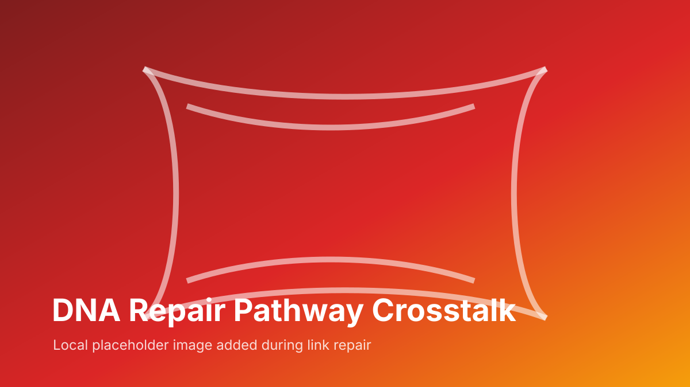

This page is linked to its matched long-form source review. Read online and submit correction suggestions, or download the full document.
Source file: DNA Repair Pathway Crosstalk Review.docx | Match confidence: high

γ-H2AX DNA repair foci formation demonstrating the recruitment and coordination of DNA damage response proteins. Image courtesy of EJNMMI Research, SpringerOpen, doi:10.1186/s13550-020-0604-8
DNA repair pathway crosstalk represents the sophisticated integration and coordination of multiple genome maintenance systems to ensure accurate DNA repair while maintaining cellular viability. This comprehensive review examines the molecular mechanisms, regulatory networks, and therapeutic implications of repair pathway interactions.
This standardized version highlights selected sections. For full coverage, open the expanded review page or use the source-review actions above.
The human genome faces constant assault from endogenous and exogenous DNA damaging agents, necessitating sophisticated repair mechanisms to maintain genomic integrity. Rather than operating in isolation, DNA repair pathways form an integrated network with extensive crosstalk and coordination.
Cells experience approximately 20,000-40,000 DNA lesions per day, including:
Major repair pathways include:
Many proteins participate in multiple repair pathways: